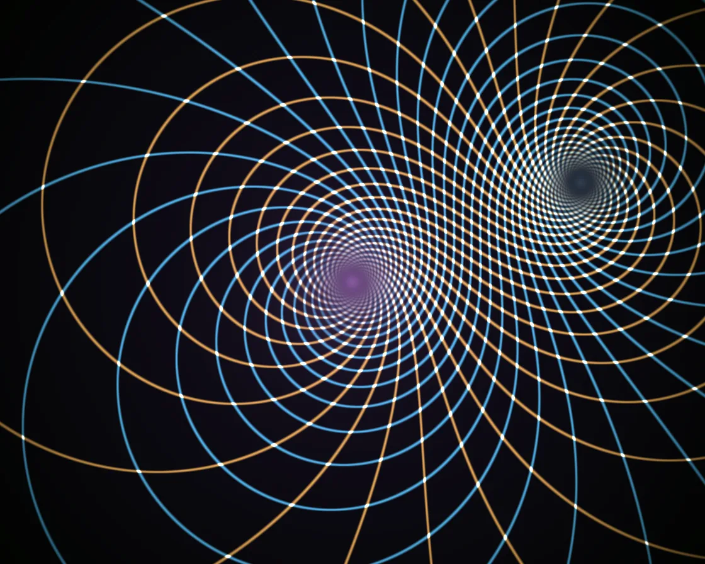

Log spiral
Log spiral is a WebGL effect: rotating log spirals look like an endless zoom inward. One plain JavaScript file with no dependencies; add it with npx motion-library add spiral.

Open it live, tune it and copy the code
What is Log spiral?
Gold and blue spirals weave a diamond lattice that pours endlessly into a glowing centre. The pointer is a second pole the spirals stream out of.
How does Log spiral work?
In log-polar space a log spiral is a straight line, so each family is a stripe of N·θ + k·log r, drawn as fwidth hairlines.
How do I add Log spiral to my website?
- In your project folder, run
npx motion-library add spiral. It writesanimations/spiral.js. Needs Node 18 or newer. - Import it and call it with a container element that has a size:
import fx from './animations/spiral.js'; const stop = fx(document.querySelector('#hero')); - Call
stop()to clean up, for example when a component unmounts.
Every setting below is also a flag, so you can install it already tuned: npx motion-library add spiral --arms 40.
What settings can I tweak?
| Setting | Flag | Default | Range | Step |
|---|---|---|---|---|
| Arms | --arms | 21 | 5 to 40 | 1 |
| Twist | --twist | 1 | 0 to 2 | 0.05 |
| Speed | --speed | 1 | 0 to 3 | 0.05 |
Specifications
- Renderer
- WebGL
- Category
- Generative & math
- Dependencies
- None
- File size
- 6.4 KB, unminified
- Interactive
- Yes: it responds to the pointer
- Reduced motion
- Respects prefers-reduced-motion
- Licence
- MIT-0: use it anywhere, no credit needed
Source code
// Spiral: two families of logarithmic spirals, one winding clockwise and one anticlockwise, drawn as hairlines of
// constant pixel width. A log spiral looks the same at every scale, so turning it is indistinguishable from zooming
// it: as the arms rotate, the whole lattice seems to pour endlessly into the centre without ever getting closer.
// The pitch of each family slowly tightens and relaxes, so the diamond lattice between them twists as it falls.
// The pointer (or an idle ghost) is a second pole: log((z − 0)/(z − pointer)) turns both families into double
// spirals that stream out of the pointer and pour into the centre, a loxodromic Möbius map. Line widths use the
// exact gradient of that map, so the angle's branch cuts leave no seam.
const PARAMS = { arms: 21, twist: 1, speed: 1 };
export default function (stage) {
const canvas = document.createElement('canvas');
canvas.style.cssText = 'position:absolute;inset:0;width:100%;height:100%;display:block';
stage.append(canvas);
const gl = canvas.getContext('webgl2', { antialias: false });
if (!gl) { stage.textContent = 'This needs WebGL2.'; return () => canvas.remove(); }
const reduce = matchMedia('(prefers-reduced-motion: reduce)').matches;
const vs = `#version 300 es
in vec2 p; void main() { gl_Position = vec4(p, 0, 1); }`;
const fs = `#version 300 es
precision highp float; out vec4 o;
uniform vec2 R, M; uniform float T, N, TW, DPR, MA;
// a hairline on the integers of a periodic field v; fw is how much v changes across one pixel
float line(float v, float fw, float w) { float d = abs(fract(v) - .5); return smoothstep(w * fw, 0., .5 - d) * clamp(.35 / fw, 0., 1.); }
void main() {
float S = min(R.x, R.y) * .5;
vec2 p = (gl_FragCoord.xy - R * .5) / S;
vec2 e = p - M * R.y / S; // from the second pole (the pointer)
float r = length(p), rq = length(e), r2 = r * r + 1e-8, q2 = rq * rq + 1e-8;
float th = (atan(p.y, p.x) - atan(e.y, e.x)) / 6.2832, u = log(r + 1e-4) - log(rq + 1e-4);
vec2 gth = (vec2(-p.y, p.x) / r2 - vec2(-e.y, e.x) / q2) / 6.2832, gu = p / r2 - e / q2; // their exact gradients
float kA = 1.25 + .45 * TW * sin(T * .13), kB = 1.6 + .5 * TW * sin(T * .11 + 2.);
float cA = kA * N / 6.2832, cB = kB * N / 6.2832;
float a = N * th + cA * u - T * .5;
float b = -(N - 3.) * th + cB * u - T * .5;
vec2 ga = N * gth + cA * gu, gb = -(N - 3.) * gth + cB * gu;
float w = 1.6 * DPR;
float la = line(a, (abs(ga.x) + abs(ga.y)) / S, w), lb = line(b, (abs(gb.x) + abs(gb.y)) / S, w);
vec3 cA3 = vec3(1., .72, .32), cB3 = vec3(.32, .78, 1.);
float fade = smoothstep(.02, .3, r) * smoothstep(.02, .25, rq) * smoothstep(2.2, .7, r);
vec3 col = vec3(.035, .03, .05) + vec3(.05, .03, .08) * (1. - r);
col += cA3 * la * .85 * fade + cB3 * lb * .85 * fade;
col += vec3(1.) * la * lb * 1.2 * fade; // where the families cross, a white knot
float core = exp(-r * 9.); // the vanishing point glows faintly
col += vec3(.9, .6, 1.) * core * .5 + vec3(.6, .85, 1.) * exp(-rq * 14.) * (.25 + .2 * MA); // and the source glows
o = vec4(col, 1);
}`;
const sh = (t, s) => { const x = gl.createShader(t); gl.shaderSource(x, s); gl.compileShader(x); if (!gl.getShaderParameter(x, gl.COMPILE_STATUS)) throw new Error(gl.getShaderInfoLog(x)); return x; };
const prog = gl.createProgram(); gl.attachShader(prog, sh(gl.VERTEX_SHADER, vs)); gl.attachShader(prog, sh(gl.FRAGMENT_SHADER, fs)); gl.bindAttribLocation(prog, 0, 'p'); gl.linkProgram(prog); gl.useProgram(prog);
gl.bindBuffer(gl.ARRAY_BUFFER, gl.createBuffer()); gl.bufferData(gl.ARRAY_BUFFER, new Float32Array([-1, -1, 3, -1, -1, 3]), gl.STATIC_DRAW);
gl.enableVertexAttribArray(0); gl.vertexAttribPointer(0, 2, gl.FLOAT, false, 0, 0);
const U = {}; ['R', 'M', 'T', 'N', 'TW', 'DPR', 'MA'].forEach(n => U[n] = gl.getUniformLocation(prog, n));
let d = 1;
const resize = () => { d = Math.min(devicePixelRatio, 2); canvas.width = (stage.clientWidth || 1) * d | 0; canvas.height = (stage.clientHeight || 1) * d | 0; gl.viewport(0, 0, canvas.width, canvas.height); };
const ro = new ResizeObserver(resize); ro.observe(stage); resize();
// the pointer, in units of stage height (origin at the centre, y up); an idle ghost takes over when nobody is
// pointing and drifts round the outer part of the frame, so the second pole stays off the vanishing point
const ghostX = (g, asp) => asp * 0.34 * Math.cos(g * 0.11);
const ghostY = g => 0.2 * Math.sin(g * 0.15 + 0.67);
let gt = reduce ? 3 : 0, asp0 = canvas.width / canvas.height, tx = ghostX(gt, asp0), ty = ghostY(gt), mx = tx, my = ty, ma = 0, lastMove = -1e9, last = performance.now();
const toLocal = e => { const b = canvas.getBoundingClientRect(); return [(e.clientX - b.left - b.width / 2) / b.height, (b.height / 2 - (e.clientY - b.top)) / b.height]; };
const onMove = e => { [tx, ty] = toLocal(e); lastMove = performance.now(); };
const onLeave = () => { lastMove = -1e9; };
canvas.addEventListener('pointermove', onMove); canvas.addEventListener('pointerdown', onMove); canvas.addEventListener('pointerleave', onLeave);
let raf; const t0 = performance.now();
function frame(now) {
const t = reduce ? 2 + (now - t0) / 1000 * .05 : (now - t0) / 1000 * PARAMS.speed;
const dt = Math.min(0.05, (now - last) / 1000); last = now;
const live = now - lastMove < 2500, asp = canvas.width / canvas.height;
if (!reduce) gt = (now - t0) / 1000; // reduced motion: the ghost holds its poster spot
if (!live) { tx = ghostX(gt, asp); ty = ghostY(gt); }
const k = 1 - Math.exp(-dt * (live ? 14 : 3));
mx += (tx - mx) * k; my += (ty - my) * k; ma += ((live ? 1 : 0) - ma) * (1 - Math.exp(-dt * 4));
gl.uniform2f(U.M, mx, my); gl.uniform1f(U.MA, ma);
gl.uniform2f(U.R, canvas.width, canvas.height); gl.uniform1f(U.T, t); gl.uniform1f(U.N, Math.round(PARAMS.arms)); gl.uniform1f(U.TW, PARAMS.twist); gl.uniform1f(U.DPR, d);
gl.drawArrays(gl.TRIANGLES, 0, 3);
raf = requestAnimationFrame(frame);
}
raf = requestAnimationFrame(frame);
return () => { cancelAnimationFrame(raf); ro.disconnect(); canvas.removeEventListener('pointermove', onMove); canvas.removeEventListener('pointerdown', onMove); canvas.removeEventListener('pointerleave', onLeave); gl.getExtension('WEBGL_lose_context')?.loseContext(); canvas.remove(); };
}